Worum es geht
Mehr Lebensqualität. Nicht nur mehr Lebenszeit.
Wie lange wir leben, ist nur die eine Frage. Die andere ist, wie viele dieser Jahre wir in guter Verfassung verbringen.
Die Lebensspanne beschreibt, wie lange wir leben. Die Gesundheitsspanne, englisch Healthspan, meint die Jahre, die wir bei guter Gesundheit verbringen. Um die zweite Zahl geht es in dieser Woche: Du lernst Gewohnheiten rund um Bewegung, Ernährung und Erholung kennen und probierst sie aus.
Vieles davon entscheidet sich im Alltag: wie wir uns bewegen, essen, schlafen und mit Stress umgehen.
In dieser Woche bekommst du verständliches Wissen dazu und die Zeit, es auszuprobieren, bevor der Alltag wieder da ist.
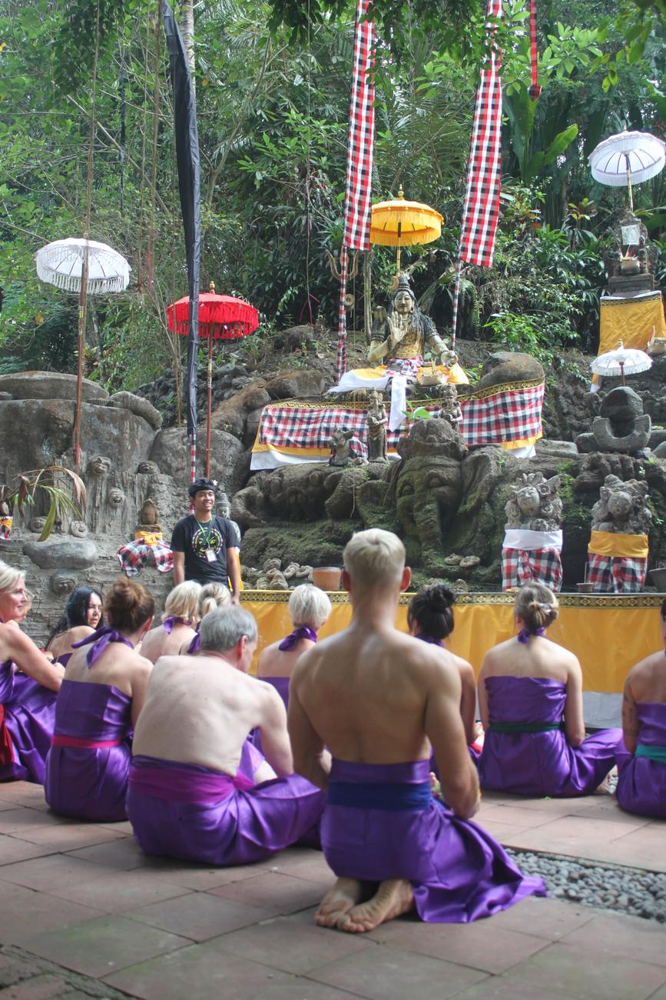
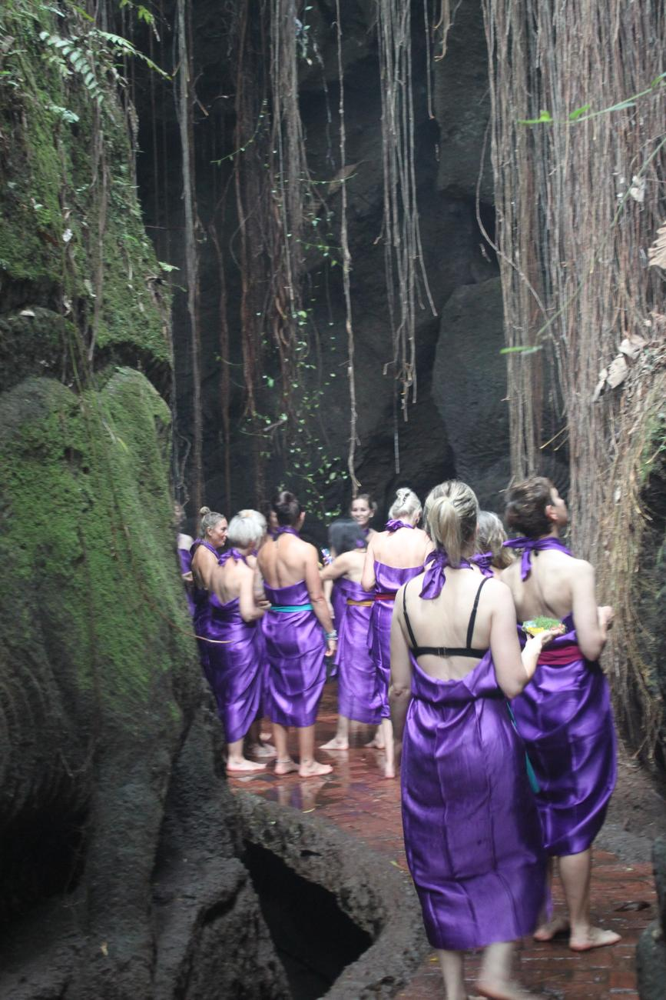
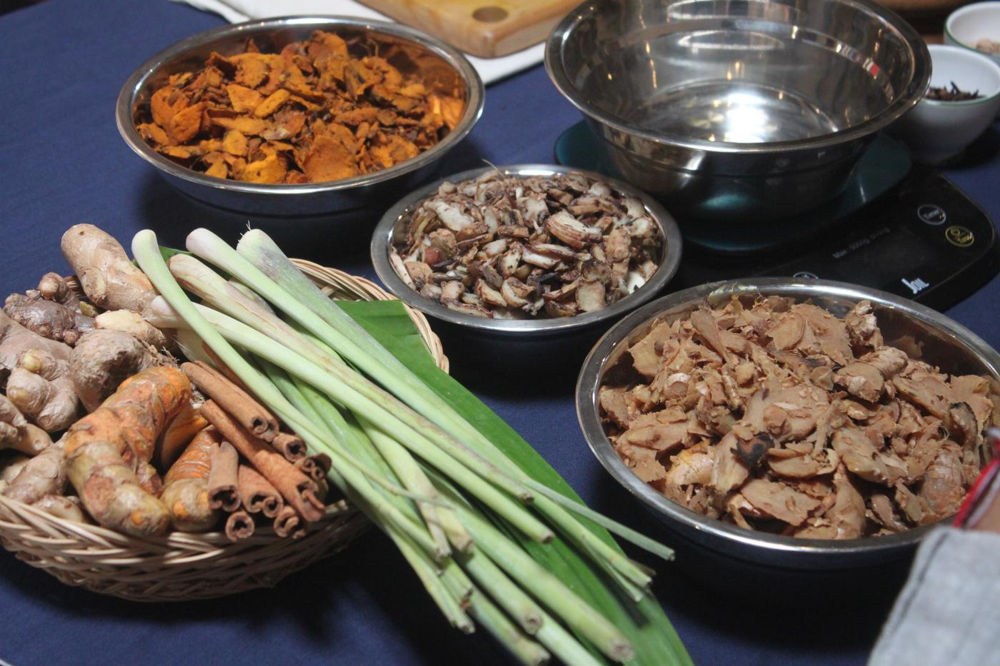
Das Programm
Was dich erwartet
- Bewegung, die zu deinem Körper und deiner Lebenssituation passt, für Anfänger und Fortgeschrittene
- Yoga und Meditation
- Wir vermitteln Wissen ohne Fachchinesisch
- Wir essen gut und lernen viel über Ernährung
- Wir lernen Bali abseits der Touristenpfade kennen
- Und das alles in einer kleinen Gruppe
Was es nicht ist
- Kein Bootcamp
- Kein Fastenprogramm
- Keine Klinik
- Kein Leistungsdruck
- Keine Selbstoptimierung
- Keine leeren Versprechen
Ein Tag im Retreat
So sieht ein typischer Tag im Retreat aus.
Yoga und Meditation
Mit Stefan, als gemeinsamer Start in den Tag. Danach Frühstück in Ruhe.
Bewegen und Erleben
Bewegung mit Danny, ein Ausflug auf Bali oder ein Workshop in unserer Longevity-Villa.
Freizeit
Zeit für dich, den Pool oder, nach Anmeldung, ein Einzelcoaching mit unserem Coach Tatjana. An Ausflugstagen sind wir länger unterwegs.
Zusammen
Wir essen gemeinsam in der Villa zu Abend. An manchen Abenden hören wir einen Vortrag oder sind Teil einer Zeremonie.
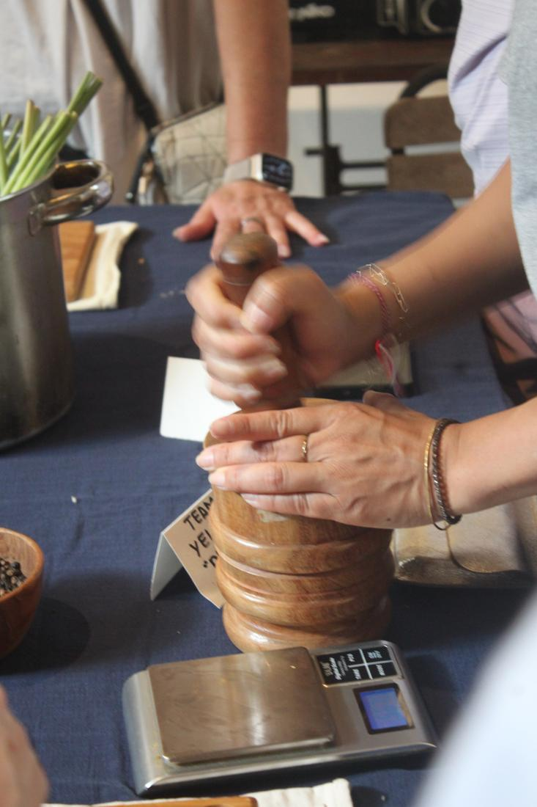
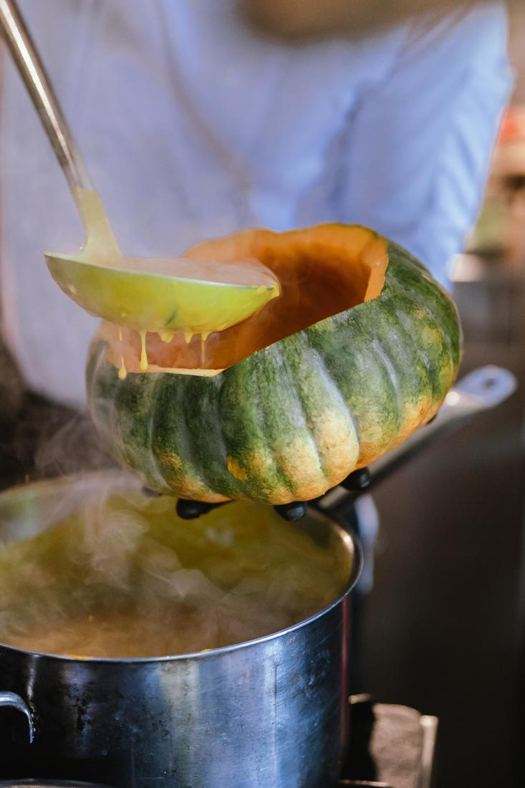
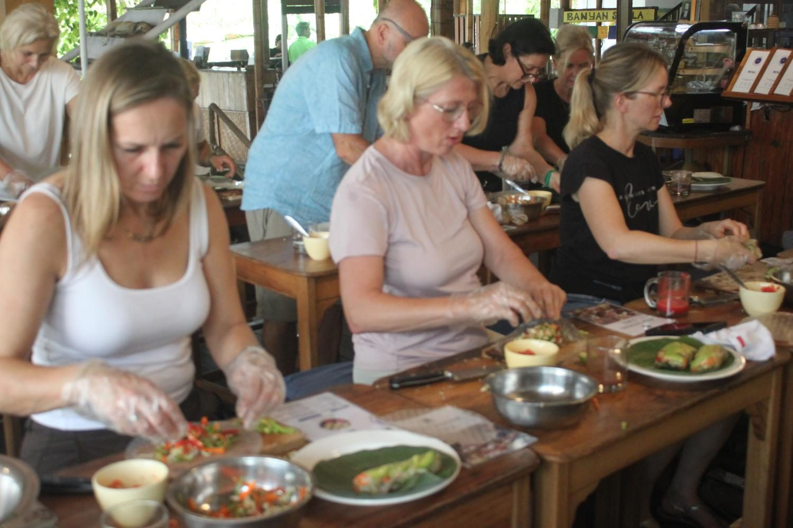
Erlebnisse
Das wirst du erleben.
Wasser
Melukat in Griya Beji
Ein balinesisch-hinduistisches Reinigungsritual mit heiligem Wasser bei Ubud. Ibu Sri begleitet die Zeremonie. Ein Moment zum Innehalten, mitten in der Natur.
Tradition
Jamu-Workshop
Jamu ist ein traditionelles Kräutergetränk aus Indonesien und gehört dort seit Generationen zum Alltag. Du bereitest es selbst zu: Du mörserst frische Wurzeln und Gewürze wie Kurkuma und Ingwer und presst sie aus. Ein Fläschchen nimmst du mit.
Ernährung
Kochkurs
Ernährung ist ein wichtiger Baustein für ein langes, gesundes Leben. Im Kochkurs lernst du, frische und gesunde Gerichte selbst zuzubereiten. Danach essen wir zusammen, was wir gekocht haben.
Helfen
Rescue Kitchen mit SOS Bali
Mit der Hilfsorganisation Scholars of Sustenance kochst du in der Gruppe Mahlzeiten aus geretteten Lebensmitteln. Danach verteilt ihr sie an Menschen, die an der Mülldeponie Suwung leben und arbeiten. Etwas für andere zu tun, gehört für uns zu einem guten Leben dazu.
Genuss
Lunch im Malaika Secret Home
Nach der Hilfsküche erwartet uns ein besonderes Mittagessen im Malaika Secret Home, einem Restaurant mit einem verwunschenen Garten. Gutes Essen ist auch Genuss und Gemeinschaft.
Klang
Klangschalen-Entspannung
Am letzten Nachmittag eine Stunde mit Klangschalen am Pool. Erholung gehört zu einem gesunden Leben genauso dazu wie Bewegung. Danach geht es auf Wunsch zum Sonnenuntergang an den Strand.
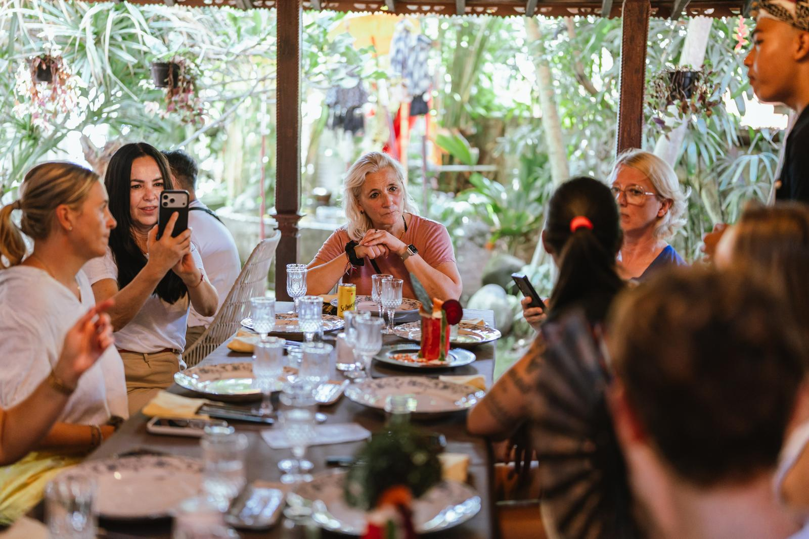
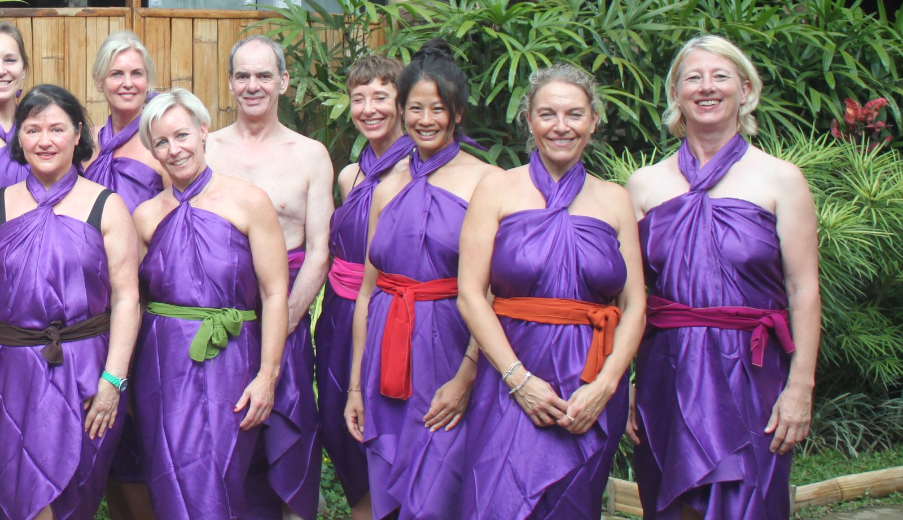
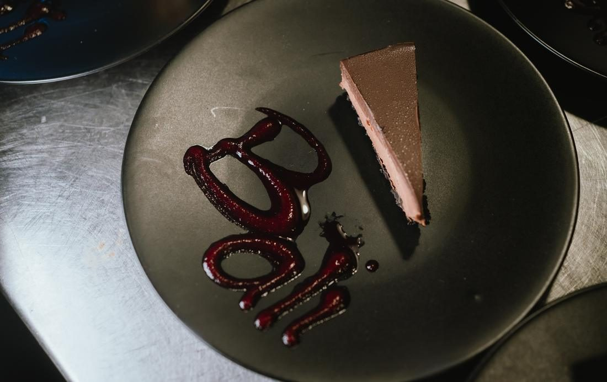
Stimmen aus dem Oktober 2026
Was unsere Gäste danach geschrieben haben.
„Was ich in dieser Woche erleben durfte, war weit mehr als ein Retreat.“
„Ich glaube, das Besondere war nicht nur das, was wir gemeinsam erlebt haben, sondern vor allem der Raum, den wir füreinander geöffnet haben.“
„Für mich war es […] ein Sprung ins kalte Wasser. Aber genau das war wichtig und richtig für mich.“
„Es ist vielleicht das schönste, intensivste und emotionalste Erlebnis meines Lebens.“
„Diese Tage auf Bali, einfach unbezahlbar und unvergesslich. Wir sind zu einer Einheit geworden. […] Es war magisch.“
„Es ist wie Familie.“
Aus dem Begleitheft
Sechs Dinge, die du schon vorher wissen kannst.
Alle Gäste bekommen ein gedrucktes Begleitheft. Mehrere Kapitel sind mit dem Team entstanden, das dich in der Woche begleitet. Hier sechs Anregungen daraus, zum Lesen und Ausprobieren.
Bewegung
613 Min.
Sitzzeit an einem Werktag.
So viel Sitzzeit gaben Erwachsene in Deutschland im DKV-Report 2025 im Schnitt an, also gut zehn Stunden. Sitzen ist nicht das neue Rauchen, wie es oft heißt. Weniger sitzen und mehr Bewegung im Alltag lohnen sich trotzdem.
Unterbrich lange Sitzphasen. Stell dir zum Beispiel eine Erinnerung, jede Stunde aufzustehen und ein paar Schritte zu gehen. Sportkleidung brauchst du dafür nicht.
Muskeln
ab 30
Muskelmasse kann langsam abnehmen.
Bei vielen Menschen beginnt das etwa ab dem 30. Lebensjahr. Wann und wie stark, ist sehr unterschiedlich. Krafttraining kann dem entgegenwirken, auch im höheren Alter. Muskeln tragen dich durch den Alltag und speichern Energie in Form von Glykogen.
Balance
1 Bein
Eine kleine Gleichgewichtsübung.
Für das Gleichgewicht verarbeitet das Gehirn Informationen aus den Augen, dem Innenohr und dem ganzen Körper. Gleichgewicht lässt sich üben, und es lässt nach, wenn wir es nie fordern.
Stell dich neben eine stabile Arbeitsplatte, an der du dich festhalten kannst. Heb einen Fuß leicht an und bleib so lange stehen, wie du dich sicher fühlst.
Atmung
4 : 6–8
Länger aus- als einatmen.
Langsames, bewusstes Atmen kann helfen, zur Ruhe zu kommen. Eine Wunderwaffe gegen Stress ist es nicht. Aber du hast es immer dabei, vor einem Gespräch genauso wie nachts um drei.
Setz dich bequem hin. Atme etwa vier Sekunden ein und lass die Ausatmung länger werden, sechs bis acht Sekunden, wenn es angenehm ist. Erzwinge nichts. Wird dir schwindelig, atme normal weiter.
Ernährung
10 Min.
Nach dem Essen eine Runde gehen.
Ein kurzer Spaziergang nach dem Essen kann den Anstieg des Blutzuckers danach verringern. Untersucht wurde das unter anderem bei Menschen mit Typ-2-Diabetes. Zehn Minuten sind ein Vorschlag für den Alltag, keine feste Grenze.
Achte auch auf genug Eiweiß und verteile es auf mehrere Mahlzeiten. Für gesunde Menschen ab 65 empfiehlt die DGE pro Kilogramm Körpergewicht etwas mehr als für Jüngere.
Okinawa
80 %
Auf die eigene Sättigung achten.
Auf Okinawa kennt man die Essensregel Hara Hachi Bu: Hör auf, wenn du ungefähr zu achtzig Prozent satt bist. Das ist eine alte Faustregel und kein messbarer Gesundheitswert.
Iss langsam und halte zwischendurch kurz inne. Bist du noch hungrig oder nur noch nicht voll?
Die Informationen hier und im Begleitheft dienen der allgemeinen Orientierung. Sie ersetzen keine ärztliche Beratung. Wenn du Beschwerden hast, lass ärztlich abklären, welche Übungen für dich passen.
Das Team im Februar 2027
Das sind unsere Experten.
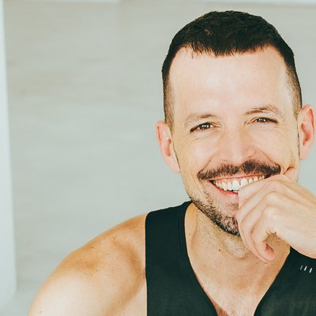
Yoga und Meditation · vor Ort
Stefan Schleich-Kehr
Unterrichtet seit über fünfzehn Jahren, für Anfänger wie für Geübte.
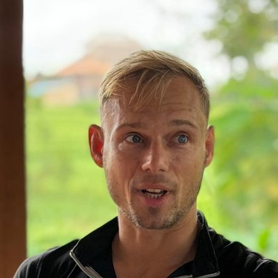
Bewegung · vor Ort
Danny Paul Kiel
Sportwissenschaftler, zertifiziert im Functional Movement Screen. Er macht am ersten Programmtag einen Fitness-Check mit dir und wiederholt ihn am letzten.
Coaching · vor Ort
Tatjana Brünjes
Sie führt vertrauliche Einzelgespräche. Die Termine sind begrenzt und werden vor Ort nach Anmeldung vergeben.
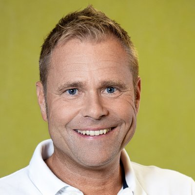
Ernährung · digital zugeschaltet
Dr. Volker Manz
Ernährungswissenschaftler und Co-Autor von „Was können wir überhaupt noch essen?“. Er erklärt Studienlagen verständlich und sagt ehrlich, wo die Forschung dünn ist.
Medizin · digital zugeschaltet
Dr. med. Delia Letizia Francia
Ärztin und Expertin für Longevity. Sie hat jahrelang zu Zellregeneration und Stammzellen geforscht.
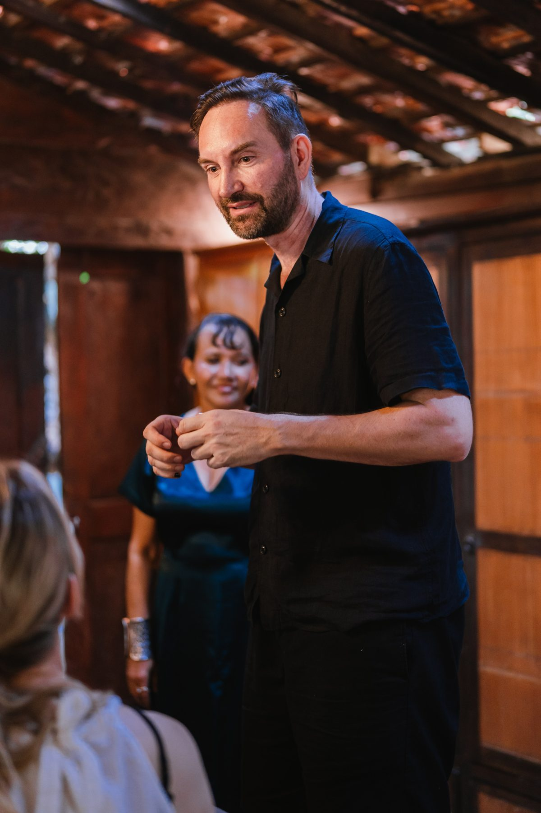
Dein Gastgeber
Ron Perduss
Verbraucherjournalist, bekannt aus Radio und Fernsehen. Ron prüft seit vielen Jahren, ob Produkte halten, was Anbieter versprechen. Er hat das Retreat ins Leben gerufen und ist die ganze Woche dabei.
Wo du wohnst
Grün Canggu.
Ein privates Resort in der Nähe von Canggu, abgeschieden und ruhig mitten im tropischen Grün. Viel Holz, Glas und Grün, eingebettet in die Natur.
Longevity-Villa
Unsere eigene Villa
Mit eigener Küche, großem Wohnbereich, Workshop-Bereich, Yoga-Shala, Bibliothek, großem Garten und privatem Pool.
In der Villa
Doppelzimmer
Schöne Doppelzimmer, verteilt über die Villa, teilweise mit Terrasse und Blick auf die Reisfelder.
Baumhaus
Ein eigenes Haus
Baumhäuser über mehrere Ebenen, mitten im Grün.
Suite oder Private Villa
Mehr Platz
Die Private Villa hat einen eigenen Pool.
Die Unterkunft kostet ab 390 € pro Woche.
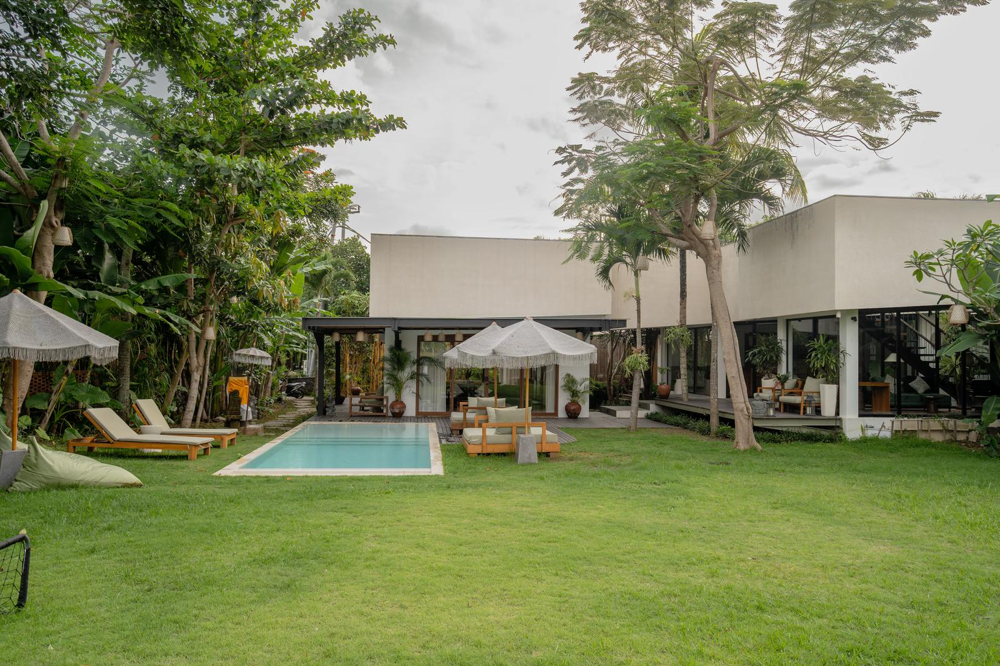
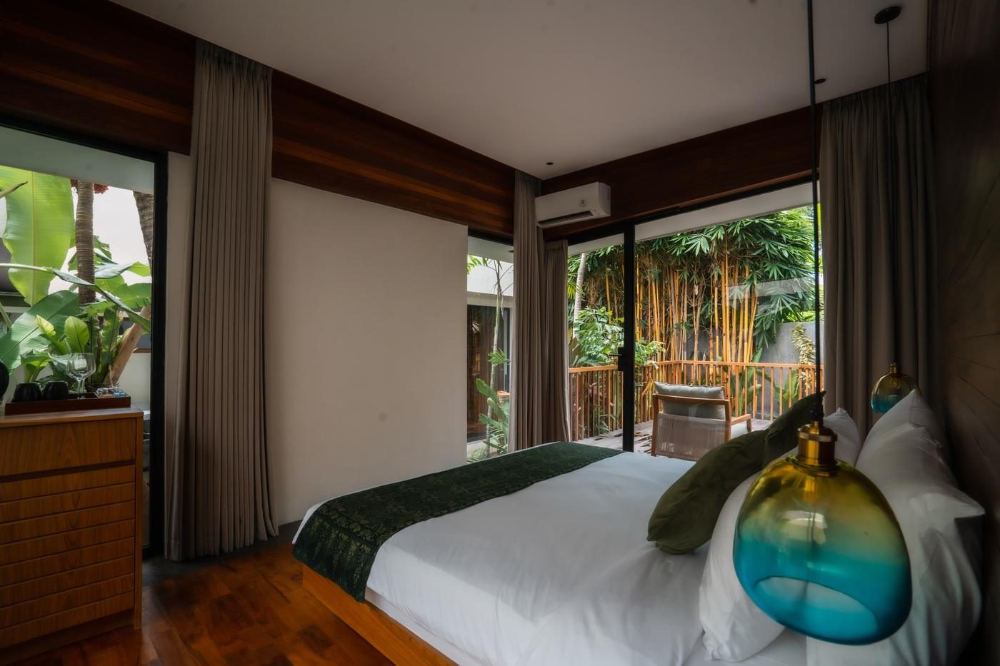
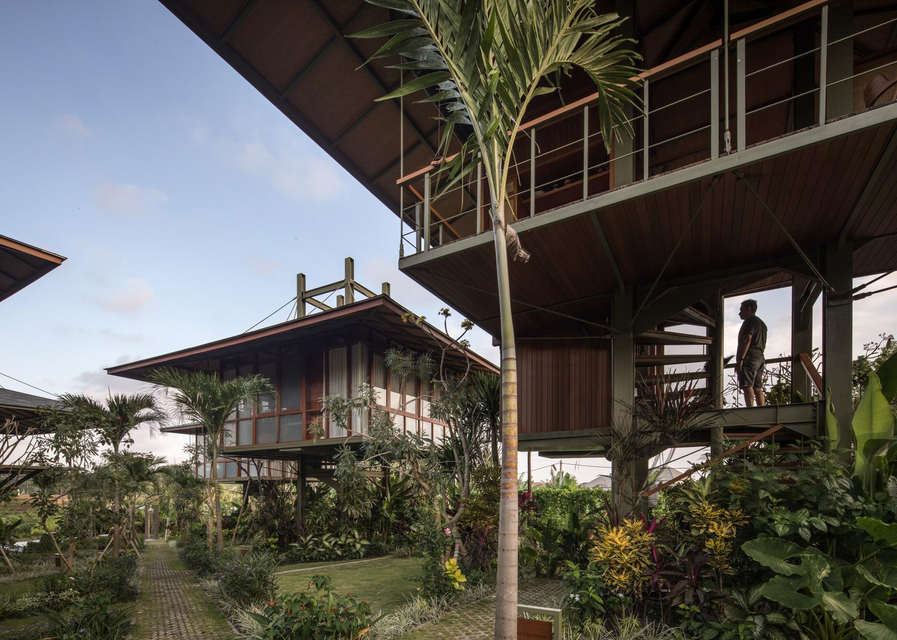
Termin und Preis
Das nächste Retreat: Februar 2027.
Termin
2. bis 9. Februar 2027
Ort
Grün Canggu, Bali
Plätze
höchstens 20
Preisliste
| Leistung | Preis pro Person |
|---|---|
| ProgrammSieben Tage mit Frühstück und Abendessen, Training, Yoga, Coaching, Vorträgen, Workshops und Ausflügen | 1.390 € |
| Dazu kommt die Unterkunft im Grün Canggu, sieben Nächte | ab 390 € |
Alle Preise in Euro pro Person, inklusive Steuern. Den genauen Preis für deine Unterkunft nennen wir dir mit deiner Zimmerwahl.
Im Programmpreis enthalten
- Frühstück jeden Tag, Abendessen an allen Abenden außer dem freien Samstag, gekocht vom Koch in der Villa
- Meditation und Yoga am Morgen, an fünf Tagen
- Training mit Fitness-Check am ersten und am letzten Programmtag
- Einzelcoaching nach Anmeldung vor Ort, die Termine sind begrenzt
- Online-Vorträge von Fachleuten zu Ernährung und Medizin, als allgemeine Information
- Melukat in Griya Beji mit Mittagessen
- Rescue Kitchen bei SOS Bali und danach der Lunch im Malaika Secret Home
- Jamu-Workshop, Kochkurs, Feuerzeremonie und Klangschalen-Entspannung
- Fahrten zu den Ausflügen
- Yoga-Ausrüstung und das Begleitheft zum Retreat
Nicht enthalten
- Unterkunft (siehe oben)
- Flug nach Denpasar und Flughafentransfer
- Visum und Reiseversicherung
- Mittagessen an Tagen ohne Ausflug und das Abendessen am freien Samstag
- Persönliche Ausgaben
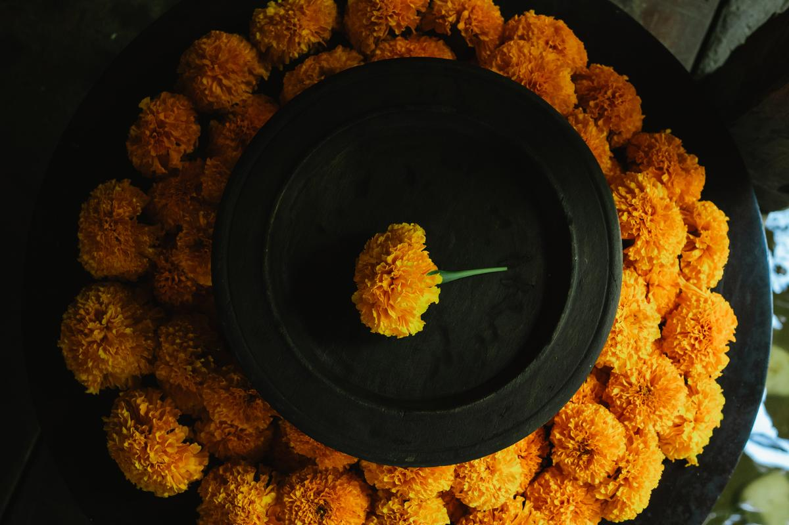
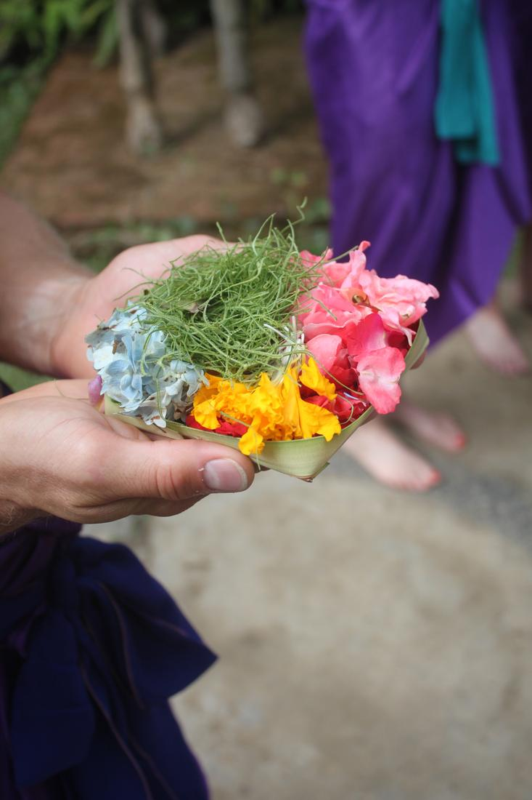
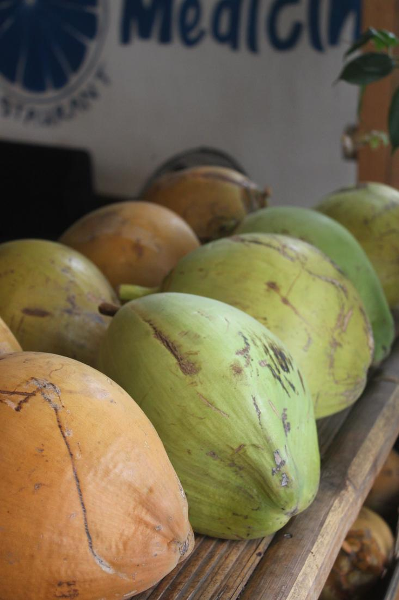
Praktisches
Was du wissen musst.
Muss ich sportlich sein?
Nein. Das Programm ist für unterschiedliche Fitnesslevel gedacht, und die Übungen werden an dein Niveau angepasst.
Kann ich allein kommen?
Ja, gern. Im Oktober kannten sich die meisten vorher nicht.
Wie komme ich hin?
Ziel ist der Flughafen Denpasar (DPS). Von Deutschland aus fliegst du meist mit einem Umstieg, zum Beispiel über Dubai, Doha oder Singapur. Je nach Verbindung dauert die Reise rund 16 bis 18 Stunden. Den Flug buchst du selbst.
Brauche ich ein Visum?
Deutsche Staatsangehörige bekommen derzeit ein Visum bei der Einreise. Der Reisepass muss noch mindestens sechs Monate gültig sein. Die Regeln ändern sich gelegentlich, bitte vor der Reise beim Auswärtigen Amt prüfen.
Wie ist das Wetter im Februar?
Februar ist auf Bali Regenzeit. Das heißt meist kurze, kräftige Schauer, oft am Nachmittag, danach ist es wieder warm. Rechne mit rund 28 Grad und hoher Luftfeuchtigkeit.
Was ist mit Unverträglichkeiten?
Sag uns bei der Anmeldung Bescheid. Wir klären dann mit der Küche, was möglich ist.
Wo wohne ich?
Im Grün Canggu. Für die Gruppe haben wir dort ein Zimmerkontingent geblockt. Die Unterkunft kostet ab 390 € pro Woche.
Der nächste Schritt
Wenn du dabei sein möchtest.
Schreib Ron über das Anfrageformular. Vor jeder Buchung lernen wir uns in einem persönlichen Gespräch kennen, gern per Videocall. Wir stellen die Gruppe bewusst zusammen, damit sie gut zueinander passt. Sieh deine Anfrage deshalb ruhig als kleine Bewerbung. Wir freuen uns darauf, dich kennenzulernen. Die Plätze sind auf 20 begrenzt.
Lieber per Mail? ron@perduss.media
Interesse anmelden
Das Anfrageformular dauert etwa zwei Minuten. Es öffnet sich in einem neuen Fenster bei Microsoft Forms.
Zum AnfrageformularWas mit deinen Angaben passiert, steht in der Datenschutzerklärung.
Wir müssen nicht perfekt werden.
Aber wir können anfangen.